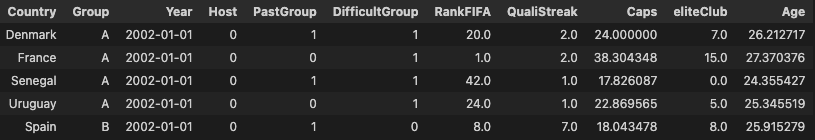
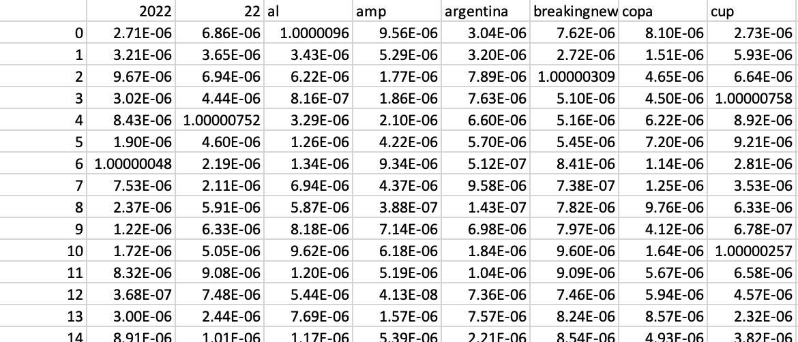

First observations
The data collected so far involves text data from Twitter, tables gathered from Wikipedia, and a manually created table with information from FIFA’s website. Along with these data, categorical labels were created for each team in terms of performance for each world cup. These labels include group difficulty, making it out of the group stage, if they’re in the group of death, among other features that would explain a team’s performance in the World Cup. The labels were assigned in numerical format; for T/F labels, 0s and 1s were assigned. The problem with most of the labels as data points is that they were created from a subjective standpoint; there was no way to get them from an objective source. At the point of writing, there have been three tables to clean: one which denotes the players in each squad, one shows World Cup qualifying information, and the third is a table with the teams that qualified for each World Cup since 2002. The next few sections will explain what was done to each of the tables.
Cleaning AllSquads table
To clean this table, I first checked if there were any NA values in it, which there weren’t. I then cleaned the club column by removing brackets and numbers that appeared in certain cells. After this, I added the eliteClub column, in which the specific player would get a True or False label (0 or 1) based on them playing in one of Europe’s historically elite clubs (i.e. Real Madrid, Manchester United, etc.). I think this could be a useful variable for predicting succes in the World Cup. Lastly, I changed the data type of the date column and other columns read as integers which should instead be categorical values. This is what the table looked like prior to cleaning:
This is what the table look like after cleaning. We can notice that the player name column is the only one that require further cleaning, but given that I won’t be needing it for any of my analysis, I decided to leave it as is. There is no need to make my workload heavier for variables that won’t be in use.
Cleaning the Qualifying table
For the qualifying table cleaning, I first had to merge 5 tables. These tables all contain 4 columns of interest: Team, FIFA Ranking, qualifying streak, and World Cup year. Initially, the tables had more columns than needed and had all the teams that qualified for the given year, so I removed the ones that weren’t important. Then, to merge them, I grabbed the aforementioned columns from each table and renamed them so they all had the same name. This was necessary to ensure that an rbind function call would work. From here, there wasn’t much work to do. I concluded the task by setting variables to their respective type (category, date or integer). Here is what one of the first 5 tables looked like before the merge:
For the finished product, I got a table without redundant variables and that separates teams into their respective World Cup participation year. This is what the merged table looks like:
Cleaning Countries table
This table didn’t require much cleaning, as I created it manually. I ensured there were no unexpected NAs and changed the data type for factor columns that were read as integers. I did, however, have to create columns for this table from a subjective point of view, which could affect future predictions. That is, the column for group of death (difficultGroup) was created based on the professional commentary for each World Cup. The group of death (difficult group column) is the group of highest considered difficulty, but it’s not something that is tangible and can be assigned with rules. The EliteClub column was also created from a subjective point of view. This is a yes-no column based on the club each player plays for, but it’s only a yes if they play in the clubs that are historically considered to be European. elite clubs. The final result for the table is this.
Merging the three tables
After cleaning those three tables, I went ahead and merged them. In doing so, I first created an Age column for the squads table and substitued any negative values (there were about 30 of them) with the average for the column. I chose to do this instead of deleting the NA rows because the age for participants in the World Cup is strongly concentrated around the 23-33 year range, so the real value won’t be far from the country’s average. Then, I grouped the Squads data by Year and Team to get the mean for Caps, sum for eliteClub, and mean for Age. Once grouped, I was able to merge it with the other tables by Year and Team. The resulting table looks like this.

Cleaning Twitter data
Cleaning the Twitter data took considerable more effort than the previous tables. For this data, I first created a corpus of the tweets by turning the initial dataframe’s text column into a list and then grabbed a set of the list of texts to remove duplicate tweets. I then made lowercased everything, used regex to remove undesired characters like hashtags, links, symbols, etc, which left me with a “clean” set of Tweets. From here, I used CountVectorizer() and recreated part of the code provided for us in HW2.1 and the shared codes folder. This is an image of what the initial data looked like:

I think there is more work to be done. Especially regarding the quality of the Tweets. I say this because the Tweets gathered with Twitter’s API rarely mention the countries participating in the tournamnet. In the next two images, you can see the clean version of the actual Tweets and resulting dataframe after calling the count vectorizer function.
